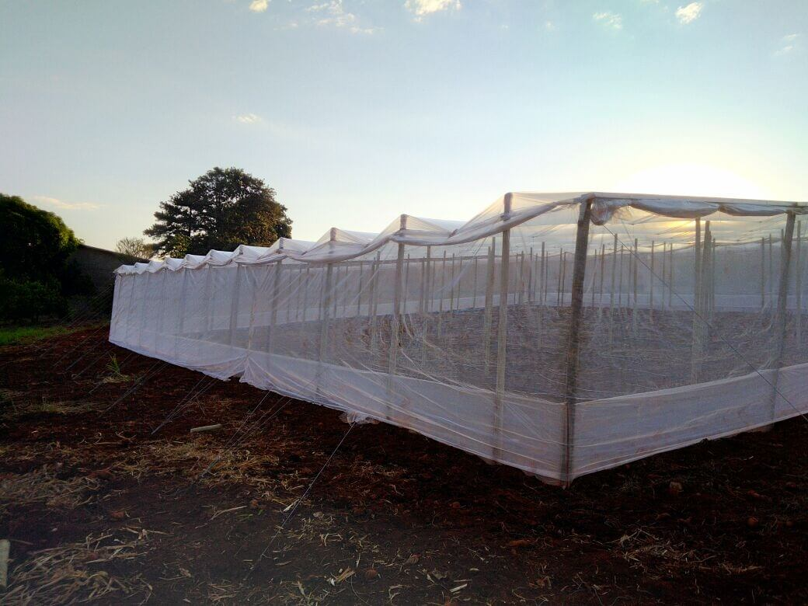

Por que devemos valorizar o agricultor?
Os agricultores são pessoas que se dedicam diariamente ao trabalho no campo, englobando atividades como o preparo do solo e o manejo das pragas e doenças nas lavouras, com o intuito de aumentar a produtividade. Eles enfrentam uma tarefa desafiadora, porém crucial, para assegurar o fornecimento de alimentos para a sociedade brasileira. Seu esforço e dedicação são de extrema importância para a sustentabilidade e prosperidade do setor agricola, garantindo o acesso a alimentos de qualidade para toda população. Os desafios enfrentados pelos produtores rurais no setor do agronegócio são diversos e diários. A busca pelo aumento da produtividade, bom retorno do trabalho, aumento de direitos, facilidade de acesso a tecnologias, entre muitos outros. Por exemplo, Santa Amélia é uma cidade pequena, mas com muitas plantações como milhos, sojas, alfafas, trigos, e estufas etc. Mostra-se adequado o aumento significativo de produções de estufas em Santa Amélia, são plantadas vários tipos de verduras como, tomate, pimentão, pepinos, tomatinhos.
Durante o período de pré-colheita é gasto o valor de R$ 2.180,00 (valor com base na hora de trabalho e encargos), na colheita o desembolso é de R$ 8.192,00. Foi considerado o valor de R$ 1.306,40 com outras operações da estufa, valor correspondente a 115 operações no ciclo da cultura. Essas operações incluem preparo de embalagem e outros. No total teremos o valor total de gasto no ciclo com mão-de-obra para uma estufa de 1000 metros quadrados, o valor de R$ 10.372,00. Os fertilizantes utilizados para o cálculo de custo para a produção são: Superfosfato Triplo, Calcário, Cloreto de Potássio, Uréia, Sulfato de Zinco, Bórax e Sulfato de Magnésio. A quantidade utilizada de cada insumo já é calculada para todo o ciclo de produção Dessas plantas, utilizando o sistema de fertirrigação, e para o preparo da terra. As principais doenças que acometem a cultura das plantas em estufa são a traça, a mosca branca, transmissora. também é acometida pelo oídio e a fusariose. Para o cálculo do custo com fitossanitários, consideramos a utilização de 7 produtos defensivos. Para controle da traça do tomateiro consideramos o uso dos inseticidas de nome comercial: Premio, Dipel e Azamax. Para o controle da mosca branca, os defensivos Connect e Oberon. Como fungicidas utilizamos para os cálculos os produtos Absolut SC e Approv. Dentre outros custos operacionais da estufa, encontram-se os gastos com mudas, esterco e energia. A muda do transplantio incorrem em gastos com semente, viveirista, consultoria e alguns casos é necessário a enxertia. Assim, o valor por muda produzida pode variar de R$ 2,00 a R$ 3,00. Tomamos como referência o custo médio por muda de R$ 2,50. Também tem o gastos com, fitas, barbantes, grampo, grampeador. Então o agricultor tem um gasto bem relevante, fica muito caro para um agricultor pode planta e é por isso q tem que valorizar muito o agricultor, pois além de ficar caro, pode ocorrer riscos de perdas como na épocas de frio, secas, chuva, pois o agricultor não tem garantia se a produção vai dá boa ou não, então eles se arrisca e plantão mesmo assim. Muitas pessoas vão ão mercado e reclama que os preços estão altos, mais não ver o que os agricultores passam para poder produzir esses produtos, É fácil chegar no mercado e pegar na prateleira limpinho, bonito, isso sim é fácil difícil é fazer o serviço que o agricultor faz e por cima não ser valorizado.
Alguns tipos de pimentão


Diferença entre os três pimentões